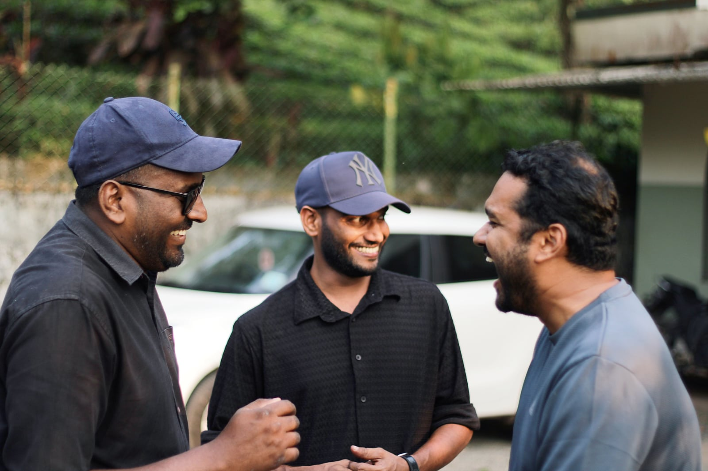
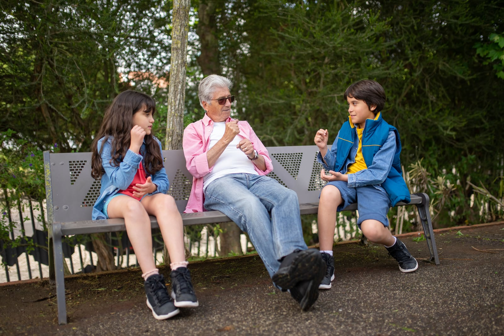
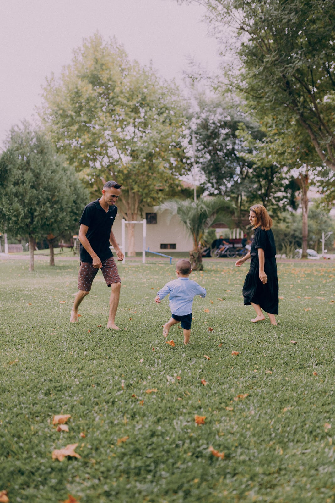
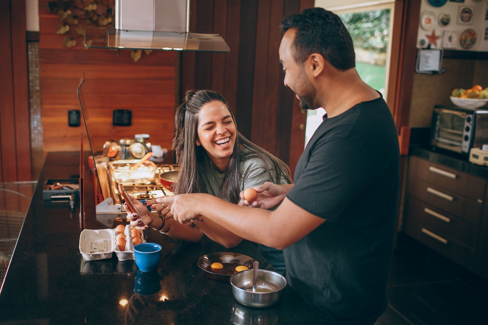
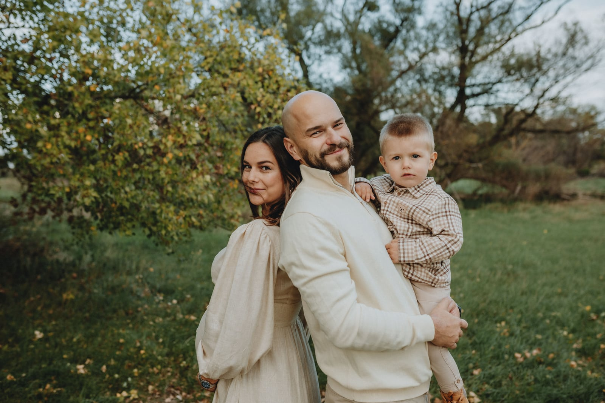
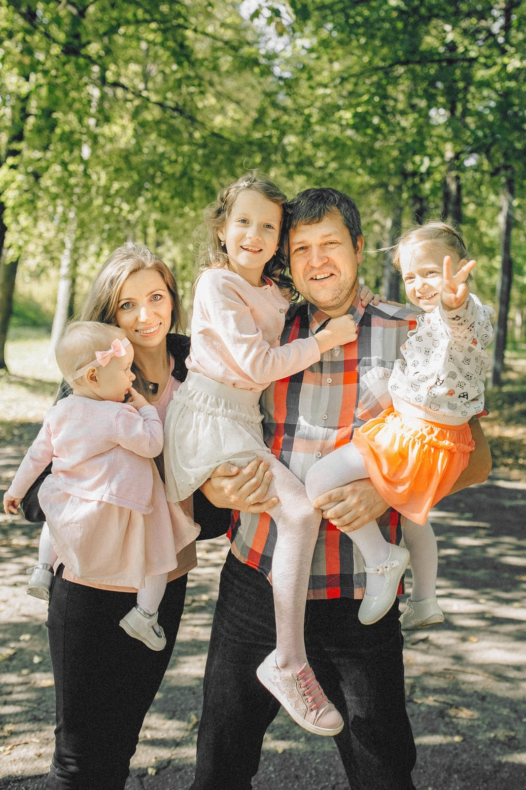

Start where you are.
Choose a support area and see who can help. You do not have to work out everything first.
Concept homepage · lifestyle imagery · illustrative service copy
Life does not fit into a job description. Find a conversation, practical advice and a clearer next step for the things on your mind.
Know your coverage before you confirm.

The everyday moments that make up a whole life.
A difficult week. A question you keep putting off. A decision that feels bigger on your own. Choose the kind of guidance that helps.
A clear path from choosing support to understanding what happens next.
Choose a support area and see who can help. You do not have to work out everything first.
Check the format, availability and your workplace coverage before making a choice.
Begin a conversation or confirm an appointment, with the important details in front of you.
Relationships, new responsibilities, ordinary days and unexpected turns. Support should leave room for all of it.



Bring psychological, legal and financial guidance into one understandable employee experience, with a separate space to manage the programme.
Explore the employer experience
Understand how conversations, appointments and employer reporting are separated before you share something personal.
Working name and wordmark. This is a design concept, not a connected service. Stock images illustrate everyday life; the people shown are not customers or experts. Family imagery does not imply family-member eligibility. Actual availability and coverage depend on the workplace plan.
The public site should make people feel welcome. The product should make the next step, the cost and the boundaries of access easy to understand.
Real-life photographs, ordinary gestures and a voice that does not judge. No stock person is presented as a real expert or customer.
Readable type, a visible next action, transparent coverage and honest statuses matter more than a colour’s supposed psychology.
The employee experience has room to breathe. HR and operations use denser data. Both share the same semantic tokens and component rules.
| Context | What matters | Design consequence |
|---|---|---|
| Employee | Find relevant support without unnecessary exposure | Clear next step; explain coverage and access at the point of use |
| HR / management | Manage a benefit and its budget | Aggregate reporting; administrative eligibility stays separate from support history |
| Advisor / operations | Manage assigned conversations and appointments | Explicit owner, deadlines, status and permission boundaries |
| Public website | Understand the service and the people it is for | More photography, clear service descriptions and verifiable claims |
All component colours come from CSS variables. A palette changes those variables once, across the homepage, the guide and every example.
Grounded green, fresh mint and a white base. People and photography carry the warmth. Brand green marks actions; success still needs a check and an explicit status.
Petrol and cool blue keep the interface precise. Useful when the HR and operational product should lead the identity.
Plum gives a different visual signature while white and cool grey keep the service open and practical. Avoid turning it into a luxury treatment brand.
A clearer blue structure with a small yellow accent. Informed by the broad blue-plus-warm-accent pattern in Modern Health and Headspace, with original NestSelf values and no cream canvas.
Showing Forest & Mint / light. The swatches and values below update with the controls.
| Role | Use | Rule |
|---|---|---|
| Canvas / surface | A cool workspace around white content surfaces | White is the public page default. A tint groups a section; it is not the background for everything. |
| Primary / hover / pressed | Actions, current navigation and links | One dominant action per task. Links in prose remain underlined. |
| Accent / on-accent | A small supporting highlight | Dark text only on the light accents. Never use white text on mint, ice, lilac or yellow. |
| Control border / subtle border | Inputs versus decorative separation | Inputs use the control border. A subtle divider must not be the only visible input boundary. |
| Status / chart series | An outcome or a categorical data series | Use text and a symbol with status. Category colour does not rate mental health. |
Official live sites and stylesheets checked on 20 October 2026. These swatches are observations, not full brand standards. Azure & Sun borrows the broad principle of blue structure with a lively accent; its values are original NestSelf proposals.
Named blue and warm-accent declarations in its current stylesheet.
Orange, blue and yellow declarations; its warm neutral is not adopted here.
Deep green and coral occur in the official theme CSS; frequency is not a formal role definition.
Dark green, bright yellow and warm-neutral utility declarations.
120 text and control pairs pass the proposed thresholds across four palettes and two modes. These are token calculations, not a certification of a finished application.
Five sans families, the same message and the same components. The initial recommendation is Onest: clear enough for the product, with enough character for the public site.
Choose an advisor and check your coverage before you confirm.
Č ć Đ đ Š š Ž ž · Љ љ Њ њ Ђ ђ Ћ ћ Џ џ
Choose an advisor and check your coverage before you confirm.
Č ć Đ đ Š š Ž ž · Љ љ Њ њ Ђ ђ Ћ ћ Џ џ
Choose an advisor and check your coverage before you confirm.
Č ć Đ đ Š š Ž ž · Љ љ Њ њ Ђ ђ Ћ ћ Џ џ
Choose an advisor and check your coverage before you confirm.
Č ć Đ đ Š š Ž ž · Љ љ Њ њ Ђ ђ Ћ ћ Џ џ
Choose an advisor and check your coverage before you confirm.
Č ć Đ đ Š š Ž ž · Љ љ Њ њ Ђ ђ Ћ ћ Џ џ
| Role | Web desktop, px | Mobile web, px | Native starting point, pt / sp | Weight |
|---|---|---|---|---|
| Marketing hero | 64 / 70, fluid | 40 / 46 | Use screen-title styles in native | 600 |
| Article title | 40 / 48 | 32 / 40 | 32 / 40 | 600 |
| Screen title | 32 / 40 | 28 / 36 | 28 / 36 | 600 |
| Section title | 24 / 32 | 22 / 30 | 22 / 30 | 600 |
| Large body | 18 / 28 | 18 / 28 | iOS 19 / 28; Android 18 / 28 | 400 |
| Body | 16 / 24 | 16 / 24 | iOS 17 / 25; Android 16 / 24 | 400 |
| Label / button | 16 / 24 | 16 / 24 | iOS 17 / 24; Android 16 / 24 | 600 |
| Metadata | 14 / 20 | 14 / 20 | iOS 15 / 21; Android 14 / 20 | 400 |
| HR data | 14 / 20 | 16 / 24 | iOS 17 / 25; Android 16 / 24 | 400 / 600 |
400 for reading, 600 for orientation, 700 for a short important value. No weights below 400 in the app. Onest has no true italic here: use weight, quotation marks and layout. Enable lining tabular figures for numerical tables and align numbers right.
Target 55–75 characters per prose line, max-width 65ch, with 16 px between paragraphs. Use self-hosted WOFF2, font-display: swap and a measured fallback. Test Serbian Latin and Cyrillic, long names and 30% longer strings. Native uses platform font scaling.
Photographs are a major part of the public experience. The product remains calm and task-focused. Human warmth comes from what we show, not a cream filter over everything.

| Where | What | How |
|---|---|---|
| Public homepage | One lead lifestyle photograph, with up to two supporting moments in this selected art direction | 3:2 lead; crop with intention; copy on its own solid surface |
| Employee home | Optional relevant editorial imagery | Keep actions easy to scan; never a photograph on every category or control |
| Expert list / detail | The real, approved expert only | 4:5 profile; 1:1 avatar; circle for small avatars only |
| Education | A context that genuinely fits the subject | 16:9; at most one meaningful image per content section |
| Event offer | The actual activity and location supplied by the provider | 16:9 card / 3:2 detail; a mood photograph is not evidence of an offer |
| HR / budgets / reports | Data and controls | No decorative photographs; an identity avatar only when relevant |
| Chat / forms / payment | Identity when it helps the task | No hero photograph behind a sensitive transaction |
| Decision | Rule |
|---|---|
| Light and processing | Soft, natural light; neutral white balance; true skin tones; moderate contrast. No beige filter, petrol skin toning or beauty retouch. |
| People and context | Different ages and everyday circumstances across the collection. Avoid token casting, forced high-fives, theatrical distress and spa/lotus clichés. |
| Portraits | Camera near eye level, chest-up crop and quiet background. Eyes around 35–45% of frame height. Use comparable face scale across profiles. |
| Responsive crop | Store focalX / focalY. Preserve eyes, chin and important gestures. Deliver a separate mobile crop when cover would lose the story. |
| Text over photography | Default: separate solid panel. If unavoidable, use quiet negative space away from faces, 24 px desktop / 16 px mobile inset and actual 4.5:1 contrast. Opacity is not proof of contrast. |
| Identity and eligibility | Stock people are never named experts, customers, endorsers or evidence of an outcome. Family imagery illustrates life context; it does not promise family-member coverage. |
One image, three uses. The bad example deliberately loses a person. Set the focal point and review both wide and narrow layouts.
Record source, photographer, licence and the appropriate approval scope. Informative alt describes the relevant context; decorative alt is empty; functional images name the action. Avoid repeating a visible person’s name unnecessarily. Never bake interface text into a photograph.
Web: responsive WebP / AVIF with fallback, explicit width/height or aspect-ratio, and lazy loading below the first screen. The lead hero loads eagerly. Native formats and caching follow platform support. CMS: role, source, author, licence, approval, contextual alt, focal point and crop variants.
| Asset | Starting export | Starting quality budget |
|---|---|---|
| Hero | 1,600–2,000 px long edge; 3:2 or 16:9 | Around 200 KB per responsive delivery, reviewed for quality |
| Profile | 800 × 1,000; 4:5 | Around 150 KB |
| Avatar | 320 × 320 for display up to 160 px | Around 35 KB |
| Article / card | 1,200 × 675 / 800 × 450; 16:9 | Around 120 / 80 KB |
A 4 px base, with 2 px reserved for optical corrections and micro-elements. Do not force typographic line-height onto the spacing grid.
space.22 pxspace.44 pxspace.88 pxspace.1212 pxspace.1616 pxspace.2020 pxspace.2424 pxspace.3232 pxspace.4040 pxspace.4848 pxspace.6464 pxspace.8080 pxspace.9696 pxAn icon and a label. A heading and its helper. A status and the value it explains.
A control, list row, card or coherent group of fields. Mobile card padding is 20; desktop is 24.
App sections usually separate by 32–48. Public sections use 64–96 when a new idea needs more space.
| Viewport, CSS px | Columns | Side margin | Gutter | Behaviour |
|---|---|---|---|---|
| 0–599 | 4 | 16 | 16 | One column; employee bottom navigation |
| 600–1023 | 8 | 24 | 24 | Two columns only when the content and text scaling fit |
| 1024–1439 | 12 | 32 | 24 | Desktop navigation and side panels |
| 1440+ | 12 | At least 40 | 24 | Stop at the appropriate content maximum |
| Component | Desktop web | Mobile web / native | Internal relation |
|---|---|---|---|
| Button | Minimum 44 high; 20 inline padding | Minimum 48 high; 20 inline padding | 8 between icon and label |
| Input / select | Minimum 48 high; 12 inline padding | Minimum 48 high; 12 inline padding | 8 label gap; 8 helper gap |
| HR compact input | Minimum 44 high | Use standard 48 | Pointer desktop density only |
| Card | 24 on all sides | 20 on all sides | 12–16 between content groups |
| List row | Minimum 56 high; 16 inline | Minimum 64 high; 16 inline | 12 between main groups |
| Table | 56 row; 16 inline / 12 block | List adaptation or a separate scroll area | 44 compact row only on pointer desktop |
| Modal / drawer | 32 internal padding | 24 plus safe area | 24 between content groups |
| Form | 24 between fields; 32 sections | 20 between fields; 24 sections | Keep related helper and error text close |
Marketing 1280 px, employee content 1120 px, HR content 1440 px, form 640 px and prose 65ch. Desktop sidebar 248 px; top bar 72 px. Maxima apply after the sidebar and margins.
Test 320, 360, 390 and 430 CSS px, long labels and large fonts. Web uses rem from the user’s base. iOS uses pt and Dynamic Type; Android uses dp for space and sp for type. Safe area and keyboard space are added at runtime.
Radii follow the size and role of the object. Elevation indicates a temporary surface above another surface; it is not a default card decoration.
| Level | CSS token value | Use |
|---|---|---|
| 0 | none + subtle border | Most content and cards |
| 1 | 0 1px 3px rgb(19 43 51 / 8%) | Slightly separated interactive surface |
| 2 | 0 4px 16px rgb(19 43 51 / 12%) | Menu, dropdown, popover |
| 3 | 0 16px 48px rgb(19 43 51 / 18%) | Modal dialog |
Phosphor is the production recommendation. Its regular, filled and duotone variants keep controls, active navigation and support categories related.
heartscaleswalletusers-threechat-circle-textcalendar-checklock-keybooks| Family | Why consider it | Trade-off / licence |
|---|---|---|
| Phosphor | Regular for controls; Fill for active navigation; Duotone for categories | MIT; direct SVG source; limit styles rather than mixing all available weights |
| Iconoir | Lighter, more open drawing on a 24 px grid | MIT; test thin strokes at 16 px and lower display density |
| Streamline Flex | A more expressive, rounded paid direction | Licence depends on the chosen package; free sets may require attribution |
| Drawing size | Use | Interaction area |
|---|---|---|
| 16 px | Metadata next to text | No standalone small action |
| 20 / 24 px | Buttons, fields, navigation | 44 px internal web target; 48 pt / dp native target |
| 32 / 48 px | Support categories and introductions | Decorative support for an explicit label |
A reference is more useful when the controls can be tried. These examples demonstrate local UI behaviour; they do not submit information or connect to a service.
Static state samples below; the loading and dialog examples are interactive.
Try an incomplete email address. Values stay in this local example.
Selected filters
Notification example is off.
| State | Visual signal | Behaviour |
|---|---|---|
| Default | Visible label and a clear boundary | Works before hover |
| Hover / pressed | Token change, no layout jump | Hover only when supported |
| Focus visible | A visible ring, also on invalid controls | Logical Tab order and restored focus |
| Selected / checked | Shape, text and colour together | State is exposed programmatically |
| Disabled | Quieter surface plus an explanation | A useful next step remains visible |
| Read-only | Readable and copyable value | Different from disabled |
| Loading / pending | A useful label and stable dimensions | Prevent duplicate actions; announce the state |
| Invalid / error | Icon and specific correction | Keep entered content; associate helper and error |
| Success | The final action and its result | Announce without stealing focus |
Validate on leaving a field or submitting. A failed form focuses an error summary with links to the fields. Radio means one choice; checkbox means multiple choices or consent; switch means an immediate setting change. A placeholder never replaces a label.
One modal task at a time. Trap focus in a modal, restore it on close and allow Escape when safe. Use a sheet for short mobile choices and a full screen for complex work. Toasts are not the only durable record of payment or confirmation.
The employee booking example combines the system’s type, space, icons, selection, coverage and recovery rules. Names, times and amounts are fictional.
Find a format and a person that fit.
Psychological counselling
Serbian · online
Milica Ristić · online
Time zone: Europe/Belgrade
21 October · 16:30
Europe/Belgrade · online
In the product, the confirmation would show the time, cost and cancellation details. No appointment or payment was created here.
Choosing a time does not imply a permanent reservation. The final confirmation re-checks both availability and price.
Show the service price, the employer’s part and the employee’s part together. A credit needs an explicit value, expiry and transfer rule from the actual package.
Place “Who can see this?” next to sensitive input and before a conversation starts. Do not promise automatic anonymity or immediate availability.
| Moment | What the person sees | What the system protects |
|---|---|---|
| Choose a service | Provider, format, duration and availability | No hidden cost in the choice |
| Before confirmation | Full price, employer coverage and personal payment | Currency or the exact meaning of credits |
| Reserve a slot | Time zone and reservation expiry if one exists | Re-check server availability |
| Confirm / pay | Final amount and change rules | One transaction; durable confirmation |
| Change or cancel | New cost, refund or lost coverage | An understandable record and status |
Identify the actual person and role, publish the real response window, keep drafts on failure and prevent duplicates on retry. If there is AI, label it explicitly.
Human advisor · reply during published working hours
HR manages eligibility, programme administration and aggregate spend. It does not receive an individual conversation or therapy history.
| Programme measure | Value | Meaning |
|---|---|---|
| Eligible employees | 500 | Administrative eligibility, not a support-history list |
| Activated accounts | 164 | An illustrative programme-level measure |
| Team breakdown | Protected | Too small to show without exposing a person |
| Available fund | €1,850.00 | After active reservations in this fictional example |
A request for 25 people captures location, dates, budget, purpose and practical needs. Bowling, karting or an outdoor day are categories to compare, not invented provider offers.
| Request field | Example | Required comparison |
|---|---|---|
| Participants / location | 25 / Novi Sad | Capacity, transport and accessibility |
| Dates / budget | Chosen range / amount and currency | Included items, availability and conditions |
| Options | Bowling, karting, outdoor day | Price, duration, venue, food and cancellation terms |
| Workflow | Requested → offers ready → selected | Owner, status and a real response deadline |
These boundaries must be enforced in the actual service. Design copy and a visual lock icon do not provide access control.
| Data | Employee | Assigned advisor | HR | Operations |
|---|---|---|---|---|
| Conversation content | Own | Assigned case only | No view | Exceptional, specifically authorised access only |
| Appointments / support history | Own | Needed scope | No individual view | Needed operational scope |
| Benefit eligibility | Own | As needed | Eligibility administration | Authorised administration |
| Company fund | Relevant coverage | As needed for billing | Programme total | Authorised administration |
| Usage reporting | Own history | Professional scope | Protected aggregates | Authorised scope |
Suppress small groups and combinations of filters that reveal individuals. Set the threshold and complementary suppression through an actual privacy risk assessment.
Explain who sees sensitive input at the point of use. Do not pre-check consent. Exceptional access has a defined purpose, authority and record.
Empty, loading, offline, stale, protected and denied states have different meanings. They should never collapse into a blank screen or an unexplained zero.
| Condition | Required response |
|---|---|
| Empty / no result | Explain what is absent and offer a relevant next step |
| Loading | Use the real layout; keep labels and dimensions stable |
| Offline / failure | Keep the draft, expose retry and avoid duplicate action |
| Stale / occupied slot | Show the last check and re-check before commitment |
| Permission / expired benefit | Explain the limit and a safe return path |
| Protected aggregate | State why it is unavailable; never display it as zero |
The design targets WCAG 2.2 AA. Token checks and examples support that target; a finished web and native product still needs an implementation audit.
| Area | NestSelf rule | Verification |
|---|---|---|
| Contrast | Normal text ≥ 4.5:1; relevant control boundaries ≥ 3:1 | Audit real combinations, modes and states |
| Touch targets | Internal web 44 px; native 48 pt / dp | WCAG AA 2.5.8 minimum is 24 × 24 CSS px with exceptions |
| Keyboard / focus | Logical order; visible focus not hidden by sticky UI | Menus, comboboxes, dialogs and return focus |
| Reflow / text scaling | Usable at 320 CSS px; zoom and font scaling preserve content | Do not fix text container heights |
| Text spacing | Tolerate user overrides | 1.5 line height; 2em paragraph gap; .12em letters; .16em words |
| Screen readers | Name, role, state and useful change announcements | VoiceOver, TalkBack and web readers |
| Media | Useful alt, captions and transcripts | No essential text only inside an image |
| Token | Time | Use |
|---|---|---|
| Fast | 120 ms | Hover, pressed, colour change |
| Standard | 200 ms | Small menu or content transition |
| Slow | 280 ms | Sheet or larger context change |
| Easing | cubic-bezier(.2,0,0,1) | Standard entry / exit |
| Reduced | 0 ms; optional brief fade up to 50 ms | No translate, scale, parallax or shimmer |
No automatic carousel, decorative loop or forced scrolling. A gesture has a button alternative. Native transitions and haptics follow platform preferences.
| Situation | Example English copy | Reason |
|---|---|---|
| Primary action | “Find a time” | Describe the actual next step |
| Network failure | “Your message was not sent. Try again.” | Explain the outcome and recovery |
| Waiting | “Reply during published working hours.” | Use the real response standard |
| Privacy | “Who can see this?” | Open a concrete access explanation |
| Lock-screen notification | “You have a new message.” | Keep sensitive content out of the preview |
Use direct, calm language. Do not diagnose, promise an outcome or use shame to create engagement. Employee language is personal; HR language is neutral and administrative. Localise dates, money, plurals and time zones with locale formatters.
This reference defines the foundations, demonstrates the principal components and documents the patterns that shape the service. It does not pretend that every production variant has already been built.
| Question | Covered here | Still needs confirmation |
|---|---|---|
| Ownable identity | Four coherent palettes, five type candidates, a people-led direction | Working name, final logo and any bespoke illustration language |
| Photography | Placement, crops, processing, alt, rights and export rules | Real expert portraits, production shoots and recorded permissions |
| Reading / language | Real font files and Serbian test glyph coverage | Native local forms, extreme font sizes and long content |
| Implementation | Semantic tokens, CSS, states, dimensions and examples | Actual component variants, responsive parity and application integration |
| Trust / cost / access | Coverage pattern, role boundaries and clear copy | User testing with employees and HR; actual contracts and permissions |
| Resilience / accessibility | Distinct edge states and measured token contrast | Keyboard, reader, mobile-device and product-wide audits |
| Service-specific gaps | A documented inventory and constraints | Local crisis pathway, video calling, export/print and final cancellation policy |
Primary sources and actual assets, checked on 20 October 2026. Standards set constraints. Palette composition, type character, layouts and exact token values are design decisions for NestSelf.
Original source, language and interface intent.
https://github.com/simpals/onestKostas Bartsokas; author version 1.012 and type features.
https://github.com/kosbarts/CommissionerCurrent family source and variable distribution.
https://github.com/googlefonts/NunitoSansCurrent family source and licence.
https://github.com/bBoxType/FiraSansOfficial family and OFL information.
https://www.latofonts.com/lato-free-fonts/Official SVG source and MIT licence.
https://github.com/phosphor-icons/coreAlternative drawing style and licence.
https://iconoir.com/docs/introductionAlternative icon families; verify the selected package licence.
https://blog.streamlinehq.com/the-streamline-icon-system/Text contrast thresholds.
https://www.w3.org/WAI/WCAG22/Understanding/contrast-minimum.htmlRelevant controls and visual boundaries.
https://www.w3.org/WAI/WCAG22/Understanding/non-text-contrast.html24 × 24 AA minimum with exceptions; larger internal target chosen.
https://www.w3.org/WAI/WCAG22/Understanding/target-size-minimum.htmlResponsive content and zoom.
https://www.w3.org/WAI/WCAG22/Understanding/reflow.htmlTolerance of user text-spacing overrides.
https://www.w3.org/WAI/WCAG22/Understanding/text-spacing.htmlFocus and modal behaviour.
https://www.w3.org/WAI/ARIA/apg/patterns/dialog-modal/Informative, decorative and functional images.
https://www.w3.org/WAI/tutorials/images/Native scaling and accessibility.
https://developer.apple.com/design/human-interface-guidelines/accessibility48 dp touch target guidance.
https://support.google.com/accessibility/android/answer/7101858?hl=enA structured relationship-based spacing scale.
https://www.carbondesignsystem.com/building-blocks/foundations/spacing/overviewRadius related to object scale and nesting.
https://spectrum.adobe.com/foundations/styles/object-styles/roundingElevation through shadows.
https://spectrum.adobe.com/foundations/styles/object-styles/drop-shadowTask-oriented motion.
https://www.carbondesignsystem.com/building-blocks/foundations/motion/overviewResponsive delivery, alt, dimensions and loading.
https://developer.mozilla.org/en-US/docs/Web/HTML/Reference/Elements/imgThe narrow-width homepage preview.
https://developer.mozilla.org/en-US/docs/Web/CSS/Guides/Containment/Container_queriesPhoto use and restrictions; no implied endorsement.
https://www.pexels.com/license/Model and product endorsement restrictions.
https://help.pexels.com/hc/en-us/articles/360042295214-Can-I-use-the-photos-and-videos-for-a-commercial-projectObserved values: #0069BF, #C7E6FF, #0A2C46, #FFCC8A. Snapshot, not a complete brand guide.
https://cdn.prod.website-files.com/5f39912be9da2f5c8fc5cc45/css/mh-2021-draft.shared.cd024fb48.min.cssObserved values: #FF7300, #0061EF, #FFCE00, #F9F4F2. Snapshot, not a complete brand guide.
https://cdn.prod.website-files.com/6489751d2099bd329cd95c46/css/bx-organizations-headspace.webflow.shared.e3bdbfd79.min.cssObserved values: #1F3F34, #F54432, #F5F6F0. Snapshot, not a complete brand guide.
https://mindgram.com/wp-content/themes/mindgrow/css/app.min.css?ver=1781780626Observed values: #254224, #FFF964, #0D0300, #F2EDE3. Snapshot, not a complete brand guide.
https://unmind.com/_next/static/css/2d280c705fc21d79.cssPexels #8236405. Conceptual lifestyle imagery.
Original photograph ↗Pexels #39820787. Conceptual lifestyle imagery.
Original photograph ↗Pexels #7854123. Conceptual lifestyle imagery.
Original photograph ↗Pexels #8796060. Conceptual lifestyle imagery.
Original photograph ↗Pexels #5290387. Conceptual lifestyle imagery.
Original photograph ↗Pexels #20811236. Conceptual lifestyle imagery.
Original photograph ↗Pexels #7231629. Conceptual lifestyle imagery.
Original photograph ↗Pexels #27176133. Conceptual lifestyle imagery.
Original photograph ↗Pexels #30730262. Conceptual lifestyle imagery.
Original photograph ↗Pexels #7266805. Conceptual lifestyle imagery.
Original photograph ↗The standalone HTML is for reviewing the design. The source package keeps CSS, scripts, tokens, photographs, SVGs and fonts separate, so the implementation does not have to decode embedded assets.
Update the semantic variables in styles/tokens.css. Components reference roles, not palette hex values. The root attributes choose the palette, mode and type family.
<html lang="en"
data-palette="forest"
data-mode="light"
data-font="onest">
.button {
background: var(--color-primary);
color: var(--color-on-primary);
border-radius: var(--radius-control);
}Pass the complete source package, then use this brief. It preserves the choices rather than asking the model to invent another design system.
Use this NestSelf Web Handoff as the design source of truth for the project setup. 1. Read README.md, CLAUDE.md, data/tokens.json and styles/tokens.css before building. 2. Preserve the selected default: Forest & Mint, light mode, Onest. Keep all four palettes and both modes available through semantic CSS variables. 3. Use the existing project stack. If this is a new project, set up a minimal maintainable frontend appropriate to the target; keep the design tokens framework-independent. Do not redesign the visual language while scaffolding. 4. Separate marketing, employee and HR surfaces. Keep the reference homepage image-led, with the same hierarchy, real-life photographs and responsive composition. 5. Build components from the documented contracts: buttons, fields, selections, feedback, navigation, dialogs, tables and the booking/coverage patterns. All colour in components must reference the semantic CSS variables. Keep state, size and density variants explicit. 6. Map the supplied local fonts to real weights 400, 600 and 700. Never synthesize italic. Use the original Phosphor SVG family, or its official framework package, with the documented weight rules. 7. Preserve the local image assets, credits and focal-point data. Use responsive production delivery. Stock people must not become named experts, customers or endorsements. Do not infer family eligibility from photographs. 8. Implement accessible keyboard, focus, form errors and announcements. Support reduced motion, 320 px reflow, text scaling, both language scripts and long content. 9. Treat the interactive examples as design demonstrations. Add no fake backend, payments, booked appointments, testimonials, client logos, availability promises or privacy guarantees. 10. Keep sample data visibly separate from production data. Enforce roles on the server when the service is connected; hiding UI is not access control. 11. Add a theme/token smoke check and meaningful component checks for keyboard, form errors and booking price clarity. Verify representative 390 px and 1440 px layouts in the actual browser. 12. Report the created structure, mapping of tokens, checks performed and any still-unimplemented states. Build the project setup first; do not broaden into an entire backend without an explicit brief.
Contract, not finished service: the examples are local. Authentication, availability, money movement, permissions, aggregate protection and the crisis pathway need real application and operational work. The final system review records these gaps explicitly.